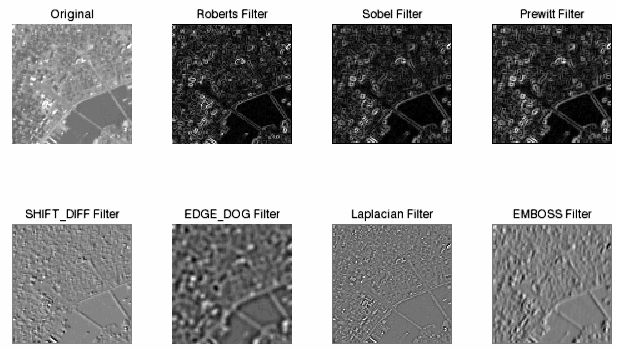

Detecting edges is another way to extract features. Many edge detection methods use directional or Laplacian filters. IDL provides the following edge detection routines:
The results of these routines can be added or subtracted from the original image to enhance the contrast of its edges. Morphological operators are used for more complex edge detection.
The following example uses each of the above functions to detect edges in an aerial image of New York City. This example data is available in the
examples/data
directory of your IDL installation. The code shown below creates the following layout in one image window:

; Import the image from the file.
file = FILEPATH('nyny.dat', $
SUBDIRECTORY = ['examples', 'data'])
orig_imageSize = [768, 512]
orig_image = READ_BINARY(file, DATA_DIMS = orig_imageSize)
; Crop the image to focus in on the bridges:
croppedSize = [96, 96]
croppedImage = orig_image[200:(croppedSize[0] - 1) + 200, $
180:(croppedSize[1] - 1) + 180]
; Display original image.
img01 = IMAGE(croppedImage, $
TITLE = "Original", $
LAYOUT = [4, 2, 1], DIMENSIONS = [640, 400])
; Apply Roberts filter.
robimage = ROBERTS(croppedImage)
img02 = IMAGE(robimage, $
TITLE = "Roberts Filter", /CURRENT, $
LAYOUT = [4, 2, 2])
; Apply Sobel filter.
sobimage = SOBEL(croppedImage)
img03 = IMAGE(sobimage, $
TITLE = "Sobel Filter", /CURRENT, $
LAYOUT = [4, 2, 3])
; Apply Prewitt filter.
prewimage = PREWITT(croppedImage)
img04 = IMAGE(prewimage, $
TITLE = "Prewitt Filter", /CURRENT, $
LAYOUT = [4, 2, 4])
; Apply SHIFT_DIFF filter.
shiftimage = SHIFT_DIFF(croppedImage)
img05 = IMAGE(shiftimage, $
TITLE = "SHIFT_DIFF Filter", /CURRENT, $
LAYOUT = [4, 2, 5])
; Apply EDGE_DOG filter.
edgedogimage = EDGE_DOG(croppedImage)
img06 = image(edgedogimage, $
TITLE = "EDGE_DOG Filter", /CURRENT, $
LAYOUT = [4,2,6])
; Apply Laplacian filter.
lapimage = LAPLACIAN(croppedImage)
img07 = IMAGE(lapimage, $
TITLE = "Laplacian Filter", /CURRENT, $
LAYOUT = [4, 2, 7])
; Apply EMBOSS filter.
embossimage = EMBOSS(croppedImage)
img08 = IMAGE(embossimage, $
TITLE = "EMBOSS Filter", /CURRENT, $
LAYOUT = [4, 2, 8])